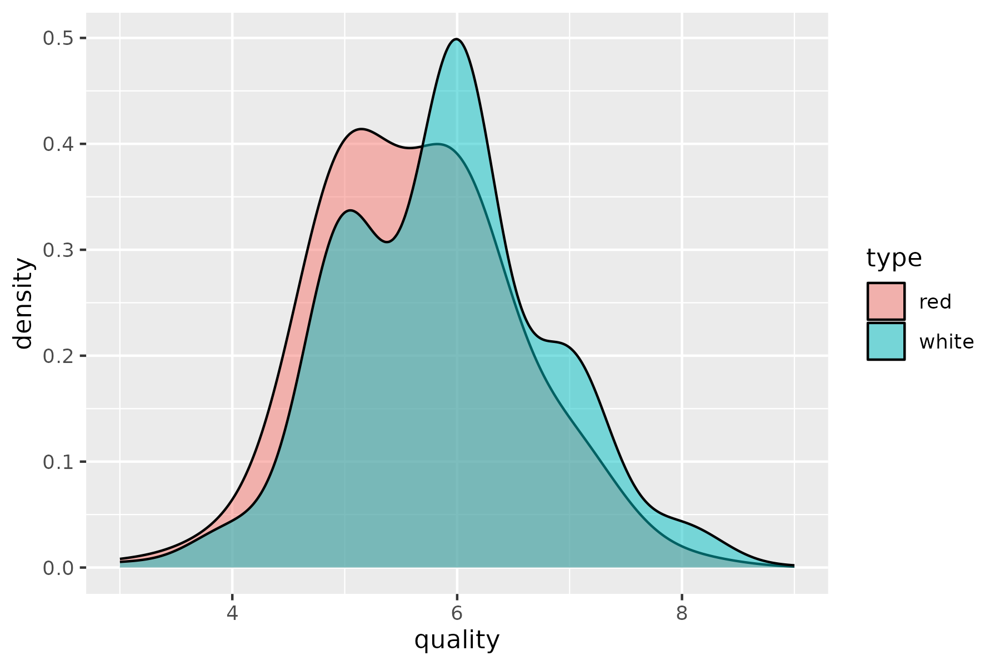
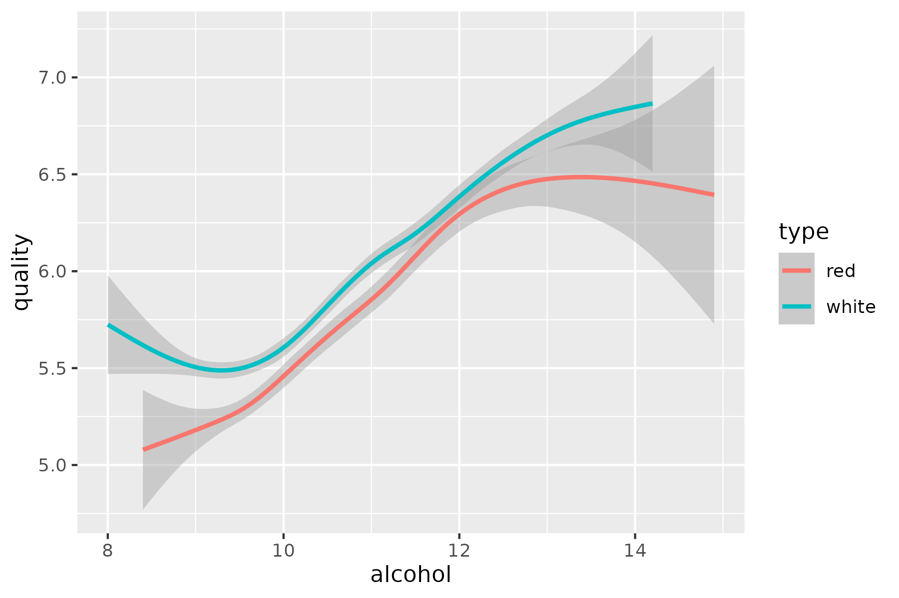
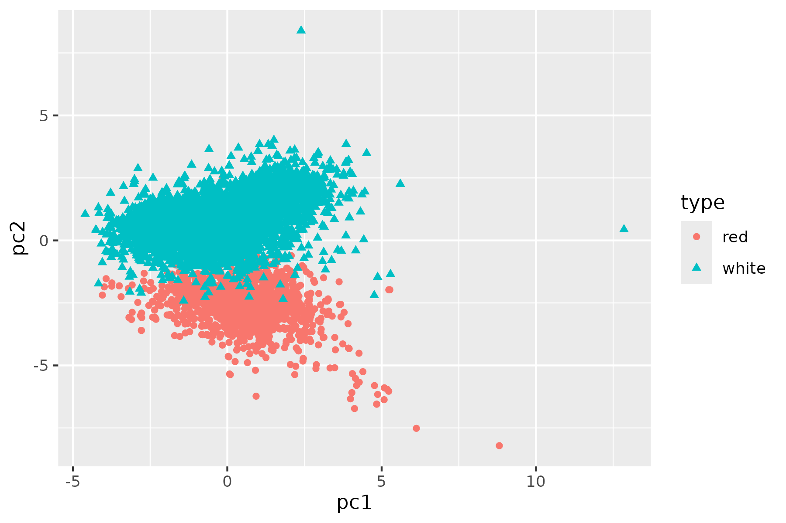
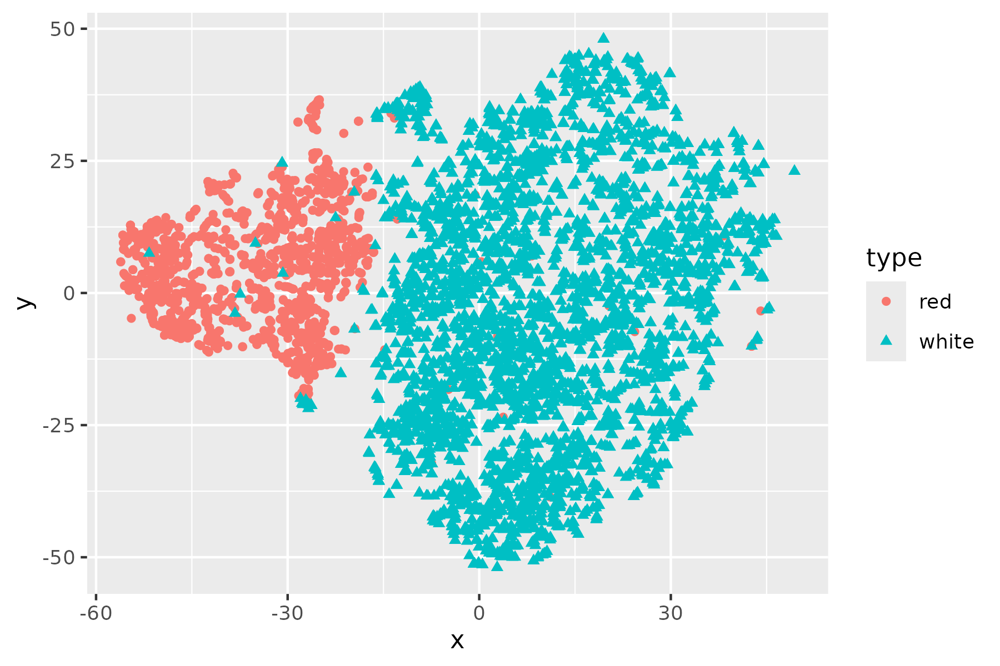
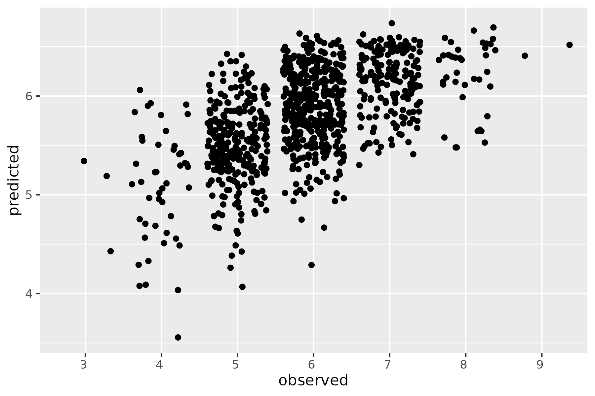

9 Modeling Data
In this chapter we’re going to perform the fourth step of the OSEMN model: modeling data. Generally speaking, a model is an abstract or higher-level description of your data. Modeling is a bit like creating visualizations in the sense that we’re taking a step back from the individual data points to see the bigger picture.
Visualizations are characterized by shapes, positions, and colors: we can interpret them by looking at them. Models, on the other hand, are internally characterized by numbers, which means that computers can use them to do things like make predictions about a new data points. (We can still visualize models so that we can try to understand them and see how they are performing.)
In this chapter I’ll consider three types of algorithms commonly used to model data:
- Dimensionality reduction
- Regression
- Classification
These algorithms come from the field of statistics and machine learning, so I’m going to change the vocabulary a bit. Let’s assume that I have a CSV file, also known as a dataset. Each row, except for the header, is considered to be a data point. Each data point has one or more features, or properties that have been measured. Sometimes, a data point also has a label, which is, generally speaking, a judgment or outcome. This becomes more concrete when I introduce the wine dataset below.
The first type of algorithm (dimensionality reduction) is most often unsupervised, which means that they create a model based on the features of the dataset only. The last two types of algorithms (regression and classification) are by definition supervised algorithms, which means that they also incorporate the labels into the model.
This chapter is by no means an introduction to machine learning. That implies that I must skim over many details. My general advice is that you become familiar with an algorithm before applying it to your data. At the end of this chapter I recommend a few books about machine learning.
9.1 Overview
In this chapter, you’ll learn how to:
- Reduce the dimensionality of your dataset using
tapkee1. - Predict the quality of white wine using
vw2. - Classify wine as red or white using
skll3.
This chapter starts with the following file:
cd /data/ch09
l
total 4.0K
-rw-r--r-- 1 dst dst 503 Nov 9 19:00 classify.cfgThe instructions to get these files are in Chapter 2. Any other files are either downloaded or generated using command-line tools.
9.2 More Wine Please!
Throughout this chapter, I’ll be using a dataset of wine tasters’ notes on red and white varieties of Portuguese wine called vinho verde. Each data point represents a wine. Each wine is rated on 11 physicochemical properties: (1) fixed acidity, (2) volatile acidity, (3) citric acid, (4) residual sugar, (5) chlorides, (6) free sulfur dioxide, (7) total sulfur dioxide, (8) density, (9) pH, (10) sulphates, and (11) alcohol. There is also an overall quality score between 0 (very bad) and 10 (excellent), which is the median of at least three evaluation by wine experts. More information about this dataset is available at the UCI Machine Learning Repository.
The dataset is split into two files: one for white wine and one for red wine. The very first step is to obtain the two files using curl (and of course parallel because I haven’t got all day):
parallel "curl -sL http://archive.ics.uci.edu/ml/machine-learning-databases/wi
ne-quality/winequality-{}.csv > wine-{}.csv" ::: red whiteThe triple colon is just another way to pass data to parallel.
cp /data/.cache/wine-*.csv .Let’s inspect both files and count the number of lines:
< wine-red.csv nl | ➊
fold | ➋
trim
1 "fixed acidity";"volatile acidity";"citric acid";"residual sugar";"chlor
ides";"free sulfur dioxide";"total sulfur dioxide";"density";"pH";"sulphates";"a
lcohol";"quality"
2 7.4;0.7;0;1.9;0.076;11;34;0.9978;3.51;0.56;9.4;5
3 7.8;0.88;0;2.6;0.098;25;67;0.9968;3.2;0.68;9.8;5
4 7.8;0.76;0.04;2.3;0.092;15;54;0.997;3.26;0.65;9.8;5
5 11.2;0.28;0.56;1.9;0.075;17;60;0.998;3.16;0.58;9.8;6
6 7.4;0.7;0;1.9;0.076;11;34;0.9978;3.51;0.56;9.4;5
7 7.4;0.66;0;1.8;0.075;13;40;0.9978;3.51;0.56;9.4;5
8 7.9;0.6;0.06;1.6;0.069;15;59;0.9964;3.3;0.46;9.4;5
… with 1592 more lines
< wine-white.csv nl | fold | trim
1 "fixed acidity";"volatile acidity";"citric acid";"residual sugar";"chlor
ides";"free sulfur dioxide";"total sulfur dioxide";"density";"pH";"sulphates";"a
lcohol";"quality"
2 7;0.27;0.36;20.7;0.045;45;170;1.001;3;0.45;8.8;6
3 6.3;0.3;0.34;1.6;0.049;14;132;0.994;3.3;0.49;9.5;6
4 8.1;0.28;0.4;6.9;0.05;30;97;0.9951;3.26;0.44;10.1;6
5 7.2;0.23;0.32;8.5;0.058;47;186;0.9956;3.19;0.4;9.9;6
6 7.2;0.23;0.32;8.5;0.058;47;186;0.9956;3.19;0.4;9.9;6
7 8.1;0.28;0.4;6.9;0.05;30;97;0.9951;3.26;0.44;10.1;6
8 6.2;0.32;0.16;7;0.045;30;136;0.9949;3.18;0.47;9.6;6
… with 4891 more lines
wc -l wine-{red,white}.csv
1600 wine-red.csv
4899 wine-white.csv
6499 total- For clarity I use
nlto add line numbers. - To see the entire header, I use
fold.
At first sight this data appears to be quite clean. Still, let’s scrub it so that it conforms more with what most command-line tools expect. Specifically, I’ll:
- Convert the header to lowercase.
- Replace the semi-colons with commas.
- Replace spaces with underscores.
- Remove unnecessary quotes.
The tool tr can take care of all these things. Let’s use a for loop this time—for old times’ sake—to process both files:
for COLOR in red white; do
< wine-$COLOR.csv tr '[A-Z]; ' '[a-z],_' | tr -d \" > wine-${COLOR}-clean.csv
doneLet’s also create a single dataset by combining the two files. I’ll use csvstack4 to add a column named type, which will be “red” for rows of the first file, and “white” for rows of the second file:
csvstack -g red,white -n type wine-{red,white}-clean.csv | ➊
xsv select 2-,1 > wine.csv ➋- The new column type is placed at the beginning by
csvstack. - Some algorithms assume that the label is the last column, so I use
xsvto move the column type to the end.
It’s good practice to check whether there are any missing values in this dataset, because most machine learning algorithms can’t handle them:
csvstat wine.csv --nulls
1. fixed_acidity: False
2. volatile_acidity: False
3. citric_acid: False
4. residual_sugar: False
5. chlorides: False
6. free_sulfur_dioxide: False
7. total_sulfur_dioxide: False
8. density: False
9. ph: False
10. sulphates: False
11. alcohol: False
12. quality: False
13. type: FalseExcellent! If there were any missing values, we could fill them with, say, the average or most common value of that feature. An alternative, less subtle approach is to remove any data points that have at least one missing value. Just out of curiosity, let’s see what the distribution of quality looks like for both red and white wines.
rush run -t 'ggplot(df, aes(x = quality, fill = type)) + geom_density(adjust =
3, alpha = 0.5)' wine.csv > wine-quality.png
display wine-quality.png
From the density plot you can see the quality of white wine is distributed more towards higher values. Does this mean that white wines are overall better than red wines, or that the white wine experts more easily give higher scores than red wine experts? That’s something that the data doesn’t tell us. Or is there perhaps a relationship between alcohol and quality? Let’s use rush to find out:
rush plot --x alcohol --y quality --color type --geom smooth wine.csv > wine-a
lcohol-vs-quality.png
display wine-alcohol-vs-quality.png
Eureka! Ahem, let’s carry on with some modeling, shall we?
9.3 Dimensionality Reduction with Tapkee
The goal of dimensionality reduction is to map high-dimensional data points onto a lower dimensional mapping. The challenge is to keep similar data points close together on the lower-dimensional mapping. As we’ve seen in the previous section, our wine dataset contains 13 features. I’ll stick with two dimensions because that’s straightforward to visualize.
Dimensionality reduction is often regarded as part of exploration. It’s useful for when there are too many features for plotting. You could do a scatter-plot matrix, but that only shows you two features at a time. It’s also useful as a pre-processing step for other machine learning algorithms.
Most dimensionality reduction algorithms are unsupervised. This means that they don’t employ the labels of the data points in order to construct the lower-dimensional mapping.
In this section I’ll look at two techniques: PCA, which stands for Principal Components Analysis5 and t-SNE, which stands for t-distributed Stochastic Neighbor Embedding6.
9.3.1 Introducing Tapkee
Tapkee is a C++ template library for dimensionality reduction7. The library contains implementations of many dimensionality reduction algorithms, including:
- Locally Linear Embedding
- Isomap
- Multidimensional Scaling
- PCA
- t-SNE
More information about these algorithms can be found on Tapkee’s website. Although Tapkee is mainly a library that can be included in other applications, it also offers a command-line tool tapkee. I’ll use this to perform dimensionality reduction on our wine dataset.
9.3.2 Linear and Non-linear Mappings
First, I’ll scale the features using standardization such that each feature is equally important. This generally leads to better results when applying machine learning algorithms.
To scale I use rush and the tidyverse package.
rush run --tidyverse --output wine-scaled.csv \
'select(df, -type) %>% ➊
scale() %>% ➋
as_tibble() %>% ➌
mutate(type = df$type)' wine.csv ➍
csvlook wine-scaled.csv
│ fixed_acidity │ volatile_acidity │ citric_acid │ residual_sugar │ chlorides │…
├───────────────┼──────────────────┼─────────────┼────────────────┼───────────┤…
│ 0.142… │ 2.189… │ -2.193… │ -0.745… │ 0.570… │…
│ 0.451… │ 3.282… │ -2.193… │ -0.598… │ 1.198… │…
│ 0.451… │ 2.553… │ -1.917… │ -0.661… │ 1.027… │…
│ 3.074… │ -0.362… │ 1.661… │ -0.745… │ 0.541… │…
│ 0.142… │ 2.189… │ -2.193… │ -0.745… │ 0.570… │…
│ 0.142… │ 1.946… │ -2.193… │ -0.766… │ 0.541… │…
│ 0.528… │ 1.581… │ -1.780… │ -0.808… │ 0.370… │…
│ 0.065… │ 1.885… │ -2.193… │ -0.892… │ 0.256… │…
… with 6489 more lines- I need to temporary remove the column
typebecausescale()only works on numerical columns. - The
scale()function accepts a data frame, but returns a matrix. - The function
as_tibble()converts the matrix back to a data frame. - Finally, I add back the
typecolumn.
Now we apply both dimensionality reduction techniques and visualize the mapping using rush plot:
xsv select '!type' wine-scaled.csv | ➊
header -d | ➋
tapkee --method pca | ➌
tee wine-pca.txt | trim
0.568882,-3.34818
1.19724,-3.22835
0.952507,-3.23722
1.60046,-1.67243
0.568882,-3.34818
0.556231,-3.15199
0.53894,-2.28288
-1.104,-2.56479
-0.231315,-2.86763
1.18363,-1.81641
… with 6487 more lines- Deselect the column
type - Remove the header
- Apply PCA
< wine-pca.txt header -a pc1,pc2 | ➊
paste -d, - <(xsv select type wine-scaled.csv) | ➋
tee wine-pca.csv | csvlook
│ pc1 │ pc2 │ type │
├─────────┼─────────┼───────┤
│ 0.569… │ -3.348… │ red │
│ 1.197… │ -3.228… │ red │
│ 0.953… │ -3.237… │ red │
│ 1.600… │ -1.672… │ red │
│ 0.569… │ -3.348… │ red │
│ 0.556… │ -3.152… │ red │
│ 0.539… │ -2.283… │ red │
│ -1.104… │ -2.565… │ red │
… with 6489 more lines- Add back the header with columns
pc1andpc2 - Add back the column
type
Now we can create a scatter plot:
rush plot --x pc1 --y pc2 --color type --shape type wine-pca.csv > wine-pca.pn
g
display wine-pca.png
Let’s perform t-SNE with the same approach:
xsv select '!type' wine-scaled.csv | ➊
header -d | ➋
tapkee --method t-sne | ➌
header -a x,y | ➍
paste -d, - <(xsv select type wine-scaled.csv) | ➎
rush plot --x x --y y --color type --shape type > wine-tsne.png ➏- Deselect the column
type - Remove the header
- Apply t-SNE
- Add back the header with columns
xandy - Add back the column
type - Create a scatter plot
display wine-tsne.png
We can see that t-SNE does a better job than PCA at separating the red and white wines based on their physicochemical properties. These scatter plots verify that the dataset has a certain structure; there’s a relationship between the features and the labels. Knowing this, I’m comfortable moving forward by applying supervised machine learning. I’ll start with a regression task and then continue with a classification task.
9.4 Regression with Vowpal Wabbit
In this section, I’m going to create a model that predicts the quality of the white wine, based on their physicochemical properties. Because the quality is a number between 0 and 10, we can consider this as a regression task.
For this I’ll be using Vowpal Wabbit, or vw.
9.4.1 Preparing the Data
Instead of working with CSV, vw has its own data format. The tool csv2vw8 can, as its name implies, convert CSV to this format. The --label option is used to indicate which column contains the labels. Let’s examine the result:
csv2vw wine-white-clean.csv --label quality | trim
6 | alcohol:8.8 chlorides:0.045 citric_acid:0.36 density:1.001 fixed_acidity:7 …
6 | alcohol:9.5 chlorides:0.049 citric_acid:0.34 density:0.994 fixed_acidity:6.…
6 | alcohol:10.1 chlorides:0.05 citric_acid:0.4 density:0.9951 fixed_acidity:8.…
6 | alcohol:9.9 chlorides:0.058 citric_acid:0.32 density:0.9956 fixed_acidity:7…
6 | alcohol:9.9 chlorides:0.058 citric_acid:0.32 density:0.9956 fixed_acidity:7…
6 | alcohol:10.1 chlorides:0.05 citric_acid:0.4 density:0.9951 fixed_acidity:8.…
6 | alcohol:9.6 chlorides:0.045 citric_acid:0.16 density:0.9949 fixed_acidity:6…
6 | alcohol:8.8 chlorides:0.045 citric_acid:0.36 density:1.001 fixed_acidity:7 …
6 | alcohol:9.5 chlorides:0.049 citric_acid:0.34 density:0.994 fixed_acidity:6.…
6 | alcohol:11 chlorides:0.044 citric_acid:0.43 density:0.9938 fixed_acidity:8.…
… with 4888 more linesIn this format, each line is one data point. The line starts with the label, followed by a pipe symbol and then feature name/value pairs separated by spaces. While this format may seem overly verbose when compared to the CSV format, it does offer more flexibility such as weights, tags, namespaces, and a sparse feature representation. With the wine dataset we don’t need this flexibility, but it might be useful when applying vw to more complicated problems. This article explains the vw format in more detail.
One we’ve created, or trained a regression model, it can be used to make predictions about new, unseen data points. In other words, if we give the model a wine it hasn’t seen before, it can predict, or test, its quality. To properly evaluate the accuracy of these predictions, we need to set aside some data that will not be used for training. It’s common to use 80% of the complete dataset for training and the remaining 20% for testing.
I can do this by first splitting the complete dataset into five equal parts using split9. I verify the number of data points in each part using wc.
csv2vw wine-white-clean.csv --label quality |
shuf | ➊
split -d -n r/5 - wine-part-
wc -l wine-part-*
980 wine-part-00
980 wine-part-01
980 wine-part-02
979 wine-part-03
979 wine-part-04
4898 total- The tool
shuf10 randomizes the dataset to ensure that both the training and the test have similar quality distribution.
Now I can use the first part (so 20%) for the testing set wine-test.vw and combine the four remaining parts (so 80%) into the training set wine-train.vw:
mv wine-part-00 wine-test.vw
cat wine-part-* > wine-train.vw
rm wine-part-*
wc -l wine-*.vw
980 wine-test.vw
3918 wine-train.vw
4898 totalNow we’re ready to train a model using vw.
9.4.2 Training the Model
The tool vw accepts many different options (nearly 400!). Luckily, you don’t need all of them in order to be effective. To annotate the options I use here, I’ll put each one on a separate line:
vw \
--data wine-train.vw \ ➊
--final_regressor wine.model \ ➋
--passes 10 \ ➌
--cache_file wine.cache \ ➍
--nn 3 \ ➎
--quadratic :: \ ➏
--l2 0.000005 \ ➐
--bit_precision 25 ➑
creating quadratic features for pairs: ::
[info] Any duplicate namespace interactions will be removed
You can use --leave_duplicate_interactions to disable this behaviour.
using l2 regularization = 5e-06
final_regressor = wine.model
creating cache_file = wine.cache
Reading datafile = wine-train.vw
num sources = 1
Num weight bits = 25
learning rate = 0.5
initial_t = 0
power_t = 0.5
decay_learning_rate = 1
Enabled learners: gd, generate_interactions, nn, scorer-identity, count_label
Input label = SIMPLE
Output pred = SCALAR
average since example example current current cur
rent
loss last counter weight label predict feat
ures
49.00000 49.00000 1 1.0 7.0000 0.0000
78
43.53563 38.07126 2 2.0 7.0000 0.8298
78
24.68034 5.825049 4 4.0 5.0000 2.9211
78
14.84005 4.999763 8 8.0 6.0000 4.2678
78
8.076589 1.313126 16 16.0 6.0000 5.4573
78
4.366361 0.656133 32 32.0 5.0000 5.5493
78
2.491280 0.616199 64 64.0 7.0000 5.4677
78
1.622991 0.754701 128 128.0 6.0000 5.8842
78
1.317576 1.012160 256 256.0 6.0000 5.8734
78
1.018283 0.718991 512 512.0 5.0000 5.9670
78
0.914936 0.811589 1024 1024.0 5.0000 5.9717
78
0.832085 0.749234 2048 2048.0 7.0000 5.7516
78
0.658276 0.658276 4096 4096.0 7.0000 5.6576
78 h
0.604202 0.550127 8192 8192.0 7.0000 6.2341
78 h
0.569447 0.534692 16384 16384.0 5.0000 5.8441
78 h
0.539908 0.510369 32768 32768.0 6.0000 5.1325
78 h
finished run
number of examples per pass = 3527
passes used = 10
weighted example sum = 35270.000000
weighted label sum = 207420.000000
average loss = 0.509540 h
best constant = 5.880919
total feature number = 2749620- The file wine-train.vw is used to train the model.
- The model, or regressor, will be stored in the file wine.model.
- Number of training passes.
- Caching is needed when making multiple passes.
- Use a neural network with 3 hidden units.
- Create and use quadratic features, based on all input features. Any duplicates will be removed by
vw. - Use l2 regularization.
- Use 25 bits to store the features.
Now that I have trained a regression model, let’s use it to make predictions.
9.4.3 Testing the Model
The model is stored in the file wine.model. To use that model to make predictions, I run vw again, but now with a different set of options:
vw \
--data wine-test.vw \ ➊
--initial_regressor wine.model \ ➋
--testonly \ ➌
--predictions predictions \ ➍
--quiet ➎
bat predictions | trim
6.210601
5.320969
6.411190
5.973759
5.314037
4.291012
5.827061
5.838736
5.670948
5.832406
… with 970 more lines- The file wine-test.vw is used to test the model.
- Use the model stored in the file wine.model.
- Ignore label information and just test.
- The predictions are stored in a file called predictions.
- Don’t output diagnostics and progress updates.
Let’s use paste to combine the predictions in the file predictions with the true, or observed, values that are in the file wine-test.vw. Using awk, I can compare the predicted values with the observed values and compute the mean absolute error (MAE). The MAE tells us how far off vw is on average, when it comes to predicting the quality of a white wine.
paste -d, predictions <(cut -d '|' -f 1 wine-test.vw) |
tee results.csv |
awk -F, '{E+=sqrt(($1-$2)^2)} END {print "MAE: " E/NR}' |
cowsay ➊
_______________
< MAE: 0.595575 >
---------------
\ ^__^
\ (oo)\_______
(__)\ )\/\
||----w |
|| ||So, the predictions are on average about 0.6 points off. Let’s visualize the relationship between the observed values and the predicted values using rush plot:
< results.csv header -a "predicted,observed" |
rush plot --x observed --y predicted --geom jitter > wine-regression.png
display wine-regression.png
I can imagine that the options used to the train the model can be a bit overwhelming. Let’s see how vw performs when I use all the default values:
vw -d wine-train.vw -f wine2.model --quiet ➊
vw -data wine-test.vw -i wine2.model -t -p predictions --quiet ➋
paste -d, predictions <(cut -d '|' -f 1 wine-test.vw) | ➌
awk -F, '{E+=sqrt(($1-$2)^2)} END {print "MAE: " E/NR}'
MAE: 0.660777- Train a regression model
- Test the regression model
- Compute mean absolute error
Apparently, with the default values, the MAE is 0.04 higher, meaning that the predictions are slightly worse.
In this section, I’ve only been able to scratch the surface of what vw can do. There’s reason why it accepts so many options. Besides regression, it also supports, among other things, binary classification, multi-class classification, reinforcement learning, and Latent Dirichlet Allocation. Its website contains many tutorials and articles to learn more.
9.5 Classification with SciKit-Learn Laboratory
In this section I’m going to train a classification model, or classifier, that predicts whether a wines is either red or white. While we could use vw for this, I’d like to demonstrate another tool: SciKit-Learn Laboratory (SKLL). As the name implies, it’s built on top of SciKit-Learn, a popular machine learning package for Python. SKLL, itself a Python package, provides the run_experiment tool, which makes it possible to use SciKit-Learn from the command line. Instead of run_experiment, I use the alias skll because I find it easier to remember as it corresponds to the package name:
alias skll=run_experiment
skll
usage: run_experiment [-h] [-a NUM_FEATURES] [-A] [-k] [-l] [-m MACHINES]
[-q QUEUE] [-r] [-v] [--version]
config_file [config_file ...]
run_experiment: error: the following arguments are required: config_file9.5.1 Preparing the Data
skll expects the training and test dataset to have the same filenames, located in separate directories. Because its predictions are not necessarily in the same order as the original dataset, I add a column, id, that contains a unique identifier so that I can match the predictions with the correct data points. Let’s create a balanced dataset:
NUM_RED="$(< wine-red-clean.csv wc -l)" ➊
csvstack -n type -g red,white \ ➋
wine-red-clean.csv \
<(< wine-white-clean.csv body shuf | head -n $NUM_RED) |
body shuf |
nl -s, -w1 -v0 | ➌
sed '1s/0,/id,/' | ➍
tee wine-balanced.csv | csvlook
│ id │ type │ fixed_acidity │ volatile_acidity │ citric_acid │ residual_sug…
├───────┼───────┼───────────────┼──────────────────┼─────────────┼─────────────…
│ 1 │ white │ 6.80 │ 0.340 │ 0.27 │ 5.…
│ 2 │ red │ 12.40 │ 0.420 │ 0.49 │ 4.…
│ 3 │ red │ 7.00 │ 0.430 │ 0.30 │ 2.…
│ 4 │ white │ 6.70 │ 0.330 │ 0.49 │ 1.…
│ 5 │ red │ 9.20 │ 0.540 │ 0.31 │ 2.…
│ 6 │ red │ 7.60 │ 0.665 │ 0.10 │ 1.…
│ 7 │ red │ 7.70 │ 0.580 │ 0.01 │ 1.…
│ 8 │ white │ 6.30 │ 0.200 │ 0.18 │ 10.…
… with 3190 more lines- Store the number of red wines in variable
NUM_RED. - Combine all red wines with a random sample of white wines.
- Add “line numbers” using
nlin front of each line. - Replace the “0” on the first line with “id” so that it’s a proper column name.
Let’s split this balanced dataset into a training set and a test set:
mkdir -p {train,test}
HEADER="$(< wine-balanced.csv header)"
< wine-balanced.csv header -d | shuf | split -d -n r/5 - wine-part-
wc -l wine-part-*
640 wine-part-00
640 wine-part-01
640 wine-part-02
639 wine-part-03
639 wine-part-04
3198 total
cat wine-part-00 | header -a $HEADER > test/features.csv && rm wine-part-00
cat wine-part-* | header -a $HEADER > train/features.csv && rm wine-part-*
wc -l t*/features.csv
641 test/features.csv
2559 train/features.csv
3200 totalNow that I have a balanced training dataset and a balanced test dataset, I can continue with building a classifier.
9.5.2 Running the Experiment
Training a classifier in skll is done by defining an experiment in a configuration file. It consists of several sections that specify, for example, where to look for the datasets, which classifiers Here’s the configuration file classify.cfg that I’ll use:
bat classify.cfg
───────┬────────────────────────────────────────────────────────────────────────
│ File: classify.cfg
───────┼────────────────────────────────────────────────────────────────────────
1 │ [General]
2 │ experiment_name = wine
3 │ task = evaluate
4 │
5 │ [Input]
6 │ train_directory = train
7 │ test_directory = test
8 │ featuresets = [["features"]]
9 │ feature_scaling = both
10 │ label_col = type
11 │ id_col = id
12 │ shuffle = true
13 │ learners = ["KNeighborsClassifier", "LogisticRegression", "DecisionTree
│ Classifier", "RandomForestClassifier"]
14 │ suffix = .csv
15 │
16 │ [Tuning]
17 │ grid_search = false
18 │ objectives = ["neg_mean_squared_error"]
19 │ param_grids = [{}, {}, {}, {}]
20 │
21 │ [Output]
22 │ logs = output
23 │ results = output
24 │ predictions = output
25 │ models = output
───────┴────────────────────────────────────────────────────────────────────────I run the experiment using skll:
skll -l classify.cfg 2>/dev/nullThe option-l specifies to run in local mode. skll also offers the possibility to run experiments on clusters. The time it takes to run an experiment depends on the complexity of the chosen algorithms and the size of the data.
9.5.3 Parsing the Results
Once all classifiers have been trained and tested, the results can be found in the directory output:
ls -1 output
wine.log
wine_DecisionTreeClassifier.log
wine_DecisionTreeClassifier.model
wine_DecisionTreeClassifier.results
wine_DecisionTreeClassifier.results.json
wine_DecisionTreeClassifier_predictions.tsv
wine_KNeighborsClassifier.log
wine_KNeighborsClassifier.model
wine_KNeighborsClassifier.results
wine_KNeighborsClassifier.results.json
wine_KNeighborsClassifier_predictions.tsv
wine_LogisticRegression.log
wine_LogisticRegression.model
wine_LogisticRegression.results
wine_LogisticRegression.results.json
wine_LogisticRegression_predictions.tsv
wine_RandomForestClassifier.log
wine_RandomForestClassifier.model
wine_RandomForestClassifier.results
wine_RandomForestClassifier.results.json
wine_RandomForestClassifier_predictions.tsv
wine_summary.tsvskll generates four files for each classifier: one log, two with results, and one with predictions. I extract the algorithm names and sort them by their accuracies using the following SQL query:
< output/wine_summary.tsv csvsql --query "SELECT learner_name, accuracy FROM s
tdin ORDER BY accuracy DESC" | csvlook -I
│ learner_name │ accuracy │
├────────────────────────┼───────────┤
│ RandomForestClassifier │ 0.99375 │
│ KNeighborsClassifier │ 0.9921875 │
│ LogisticRegression │ 0.9921875 │
│ DecisionTreeClassifier │ 0.98125 │The relevant column here is accuracy, which indicates the percentage of data points that are classified correctly. From this we see that actually all algorithms are performing really well. The RandomForestClassifier comes out as best performing algorithm, closely followed by KNeighborsClassifier.
Each JSON file contains a confusion matrix, giving you additional insight into the performance of each classifier. A confusion matrix is a table where the columns refer to the true labels (red and white) and the rows refer to the predicted labels. Higher numbers on the diagonal mean more correct predictions. With jq I can print the name of each classifier and extract the associated confusion matrix:
jq -r '.[] | "\(.learner_name):\n\(.result_table)\n"' output/*.json
DecisionTreeClassifier:
+-------+-------+---------+-------------+----------+-------------+
| | red | white | Precision | Recall | F-measure |
+=======+=======+=========+=============+==========+=============+
| red | [292] | 7 | 0.983 | 0.977 | 0.980 |
+-------+-------+---------+-------------+----------+-------------+
| white | 5 | [336] | 0.980 | 0.985 | 0.982 |
+-------+-------+---------+-------------+----------+-------------+
(row = reference; column = predicted)
KNeighborsClassifier:
+-------+-------+---------+-------------+----------+-------------+
| | red | white | Precision | Recall | F-measure |
+=======+=======+=========+=============+==========+=============+
| red | [296] | 3 | 0.993 | 0.990 | 0.992 |
+-------+-------+---------+-------------+----------+-------------+
| white | 2 | [339] | 0.991 | 0.994 | 0.993 |
+-------+-------+---------+-------------+----------+-------------+
(row = reference; column = predicted)
LogisticRegression:
+-------+-------+---------+-------------+----------+-------------+
| | red | white | Precision | Recall | F-measure |
+=======+=======+=========+=============+==========+=============+
| red | [296] | 3 | 0.993 | 0.990 | 0.992 |
+-------+-------+---------+-------------+----------+-------------+
| white | 2 | [339] | 0.991 | 0.994 | 0.993 |
+-------+-------+---------+-------------+----------+-------------+
(row = reference; column = predicted)
RandomForestClassifier:
+-------+-------+---------+-------------+----------+-------------+
| | red | white | Precision | Recall | F-measure |
+=======+=======+=========+=============+==========+=============+
| red | [297] | 2 | 0.993 | 0.993 | 0.993 |
+-------+-------+---------+-------------+----------+-------------+
| white | 2 | [339] | 0.994 | 0.994 | 0.994 |
+-------+-------+---------+-------------+----------+-------------+
(row = reference; column = predicted)A confusion matrix is especially helpful when you have more than two classes, so that you can see which kind of misclassifications happen, and when the cost of an incorrect classification is not the same for each class.
From a usage perspective, it’s interesting to consider that vw and skll take two different approaches. vw uses command-line options, whereas skll requires a separate file. Both approaches have their advantages and disadvantages. While command-line options enable more ad-hoc usage, a configuration file is perhaps easier to reproduce. Then again, as we’ve seen, invoking vw with any number of options can easily be placed in script or in a Makefile. The opposite, making skll accept options such that it doesn’t need a configuration file, is less straightforward.
9.6 Summary
In this chapter we’ve looked at modeling data. Through examples I dived into three different machine learning tasks namely dimensionality reduction which is unsupervised and regression and classification which are both supervised. A proper machine learning tutorial is unfortunately beyond the scope of this book. In the next section I have a couple of recommendations in case you want to learn more about machine learning. This was the fourth and last step of the OSEMN model for data science that I’m covering in this book. The next chapter is the last intermezzo chapter and will be about leveraging the command line elsewhere.
9.7 For Further Exploration
- The book Python Machine Learning by Sebastian Raschka and Vahid Mirjalili offers a comprehensive overview of machine learning and how to apply it using Python.
- The later chapters of R for Everyone by Jared Lander explain how to accomplish various machine learning tasks using R.
- If you want to get a deeper understanding of machine learning, I highly recommend you pick up Pattern Recognition and Machine Learning by Christopher Bishop and Information Theory, Inference, and Learning Algorithms by David MacKay.
- If you’re interested in learning more about the t-SNE algorithm, I recommend the original article about it: Visualizing Data Using T-SNE by Laurens van der Maaten and Geoffrey Hinton.
Sergey Lisitsyn, Christian Widmer, and Fernando J. Iglesias Garcia, tapkee – an Efficient Dimension Reduction Library, version 1.4.0, 2026, https://github.com/lisitsyn/tapkee.↩︎
John Langford, vw – Fast Machine Learning Library for Online Learning, version 9.11.9, 2026, https://vowpalwabbit.org.↩︎
Educational Testing Service, skll – SciKit-Learn Laboratory, version 5.1.0, 2024, https://skll.readthedocs.io.↩︎
Christopher Groskopf, csvstack – Stack up the Rows from Multiple CSV Files, version 1.1.0, 2023, https://csvkit.rtfd.org.↩︎
K. Pearson, “On Lines and Planes of Closest Fit to Systems of Points in Space,” Philosophical Magazine 2, no. 11 (1901): 559–72.↩︎
Laurens van der Maaten and Geoffrey Everest Hinton, “Visualizing Data Using t-SNE,” Journal of Machine Learning Research 9 (2008): 2579–2605.↩︎
Sergey Lisitsyn, Christian Widmer, and Fernando J. Iglesias Garcia, “Tapkee: An Efficient Dimension Reduction Library,” Journal of Machine Learning Research 14 (2013): 2355–59.↩︎
Jeroen Janssens, csv2vw – Convert CSV to Vowpal Wabbit Format, version 0.1, 2021, https://github.com/jeroenjanssens/dsutils.↩︎
uutils contributors, split – Split a File into Pieces, version 0.10.0, 2026, https://github.com/uutils/coreutils.↩︎
uutils contributors, shuf – Generate Random Permutations, version 0.10.0, 2026, https://github.com/uutils/coreutils.↩︎